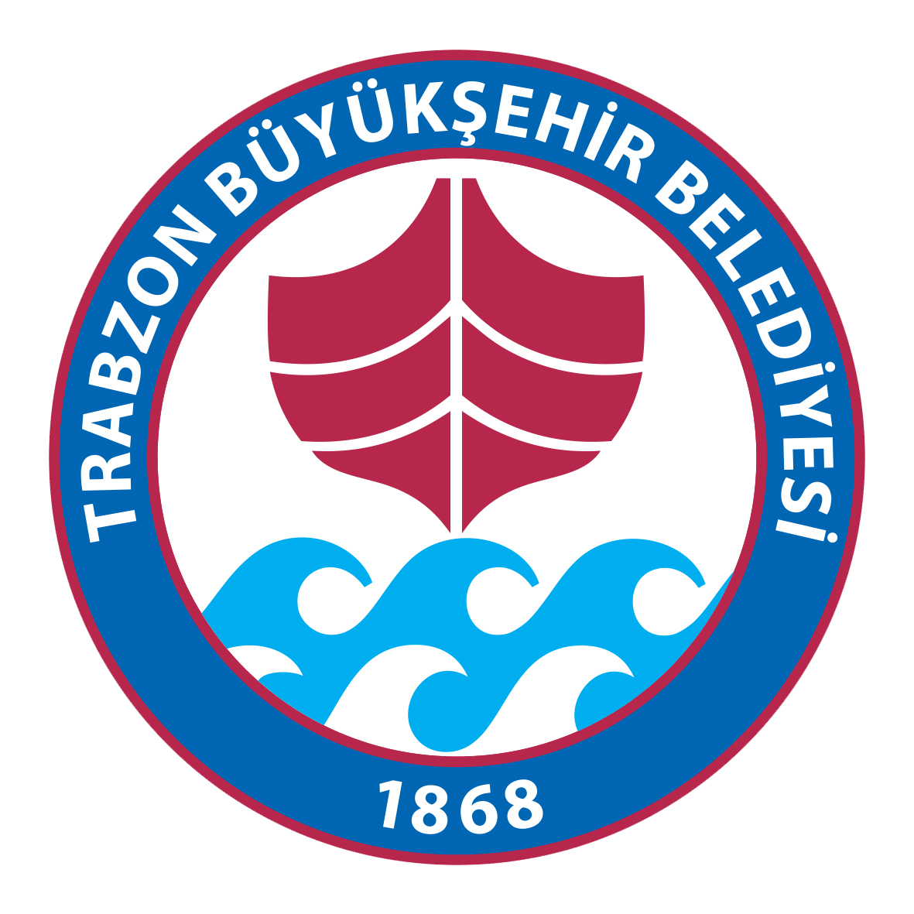

Telefon: (0462) 224 61 61
Mail :trabzon@trabzon.gov.tr
Faks: (0462) 224 00 61
Trabzon Büyükşehir Belediyesi
Murat ZORLUOĞLU
Adres: Gülbaharhatun, Kahramanmaraş Cd. No:201, 61040 Ortahisar/TrabzonTelefon: (0462) 224 61 61
Mail :trabzon@trabzon.gov.tr
Faks: (0462) 224 00 61
Trabzon Valiliği
İsmail USTAOĞLU
Adres: Gülbaharhatun, İnönü Cd. No:52, 61040 Trabzon Merkez/TrabzonTelefon: (0462) 230 19 66
Mail :trabzon@trabzon.gov.tr
Faks: (462) 230 19
Trabzon Ortahisar Belediyesi
Ahmet Metin Genç
Adres: Pazarkapı, Kahramanmaraş Cd. No:104, 61100 Ortahisar/TrabzonTelefon: (0462) 230 61 00
Mail :trabzonortahisar@trabzon.gov.tr
Faks: (462) 230 61